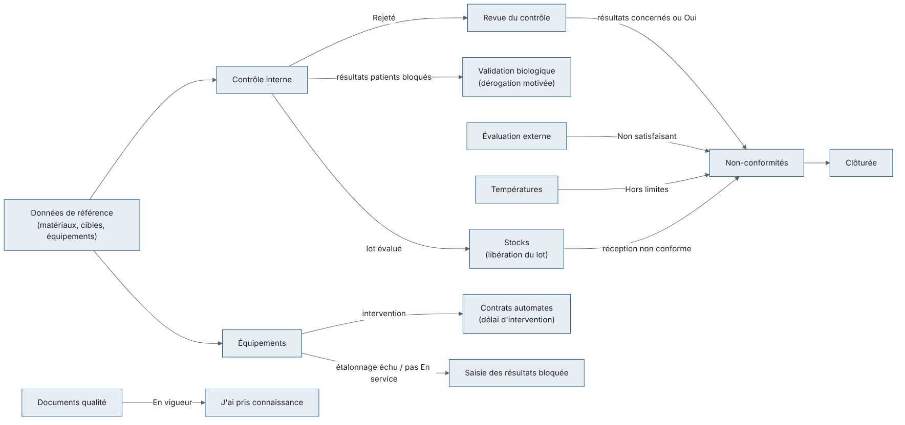
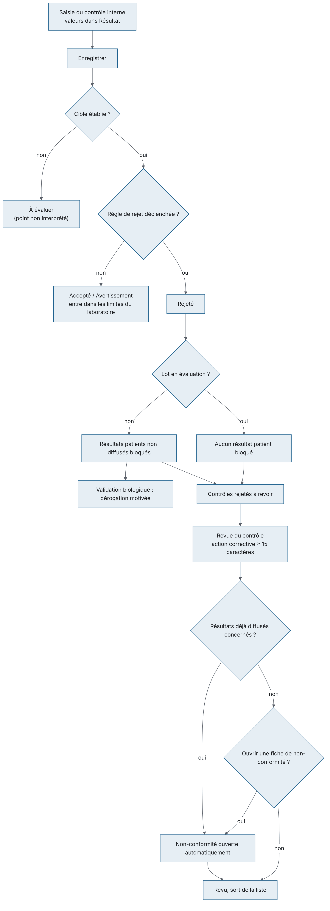
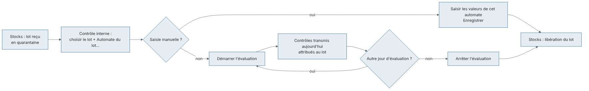
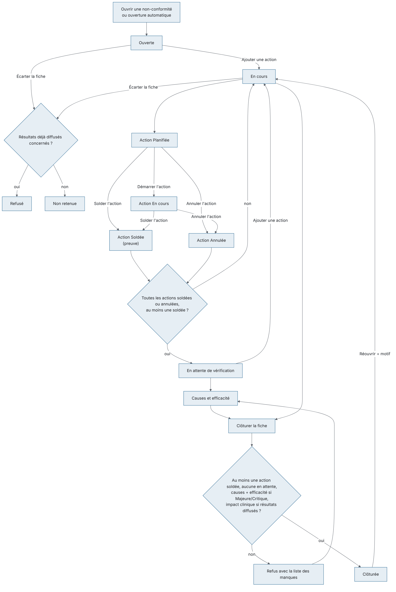
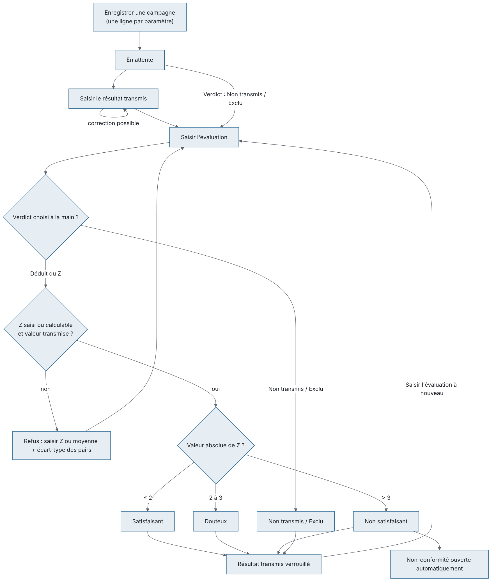
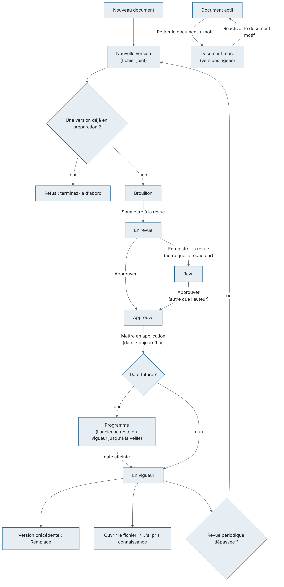
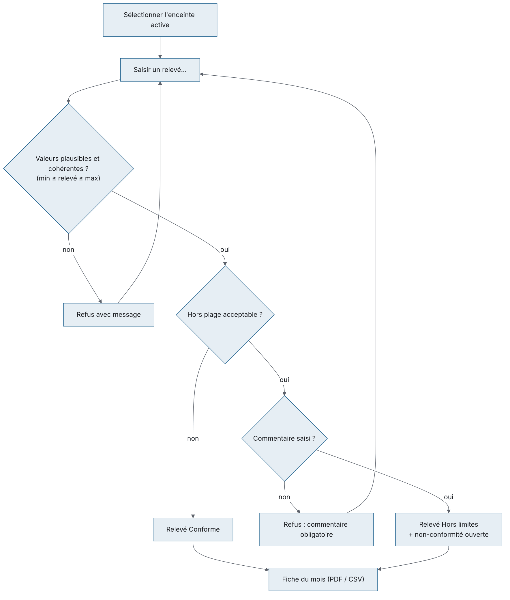
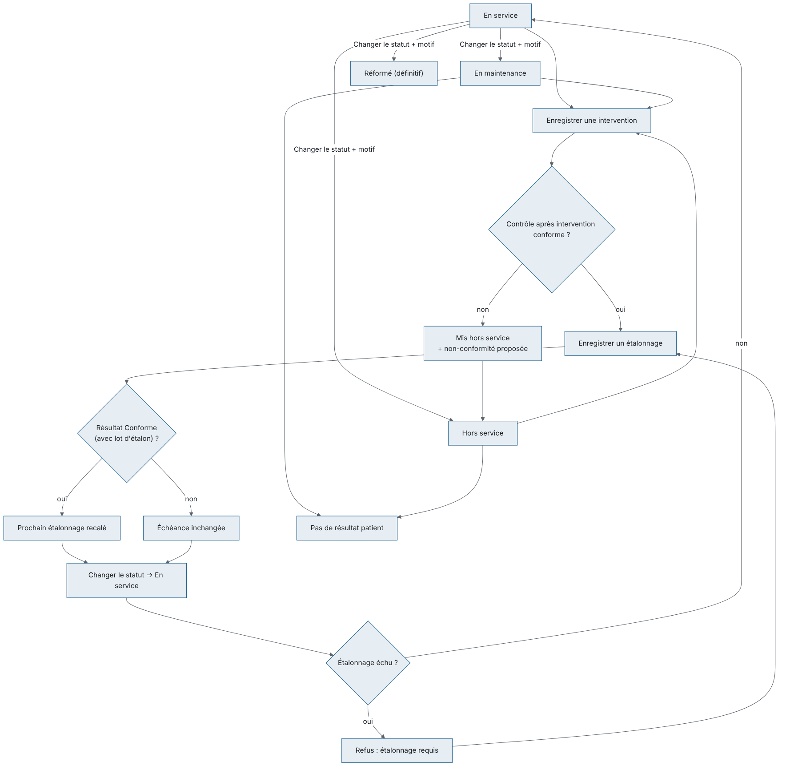
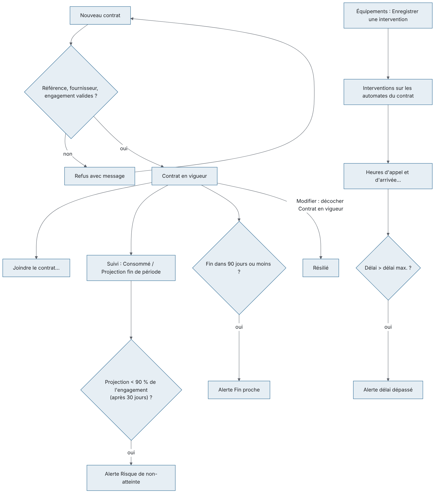

À quoi sert ce module. Il réunit le système de management de la qualité du laboratoire (ISO 15189) : la maîtrise analytique (contrôle interne et évaluation externe), le traitement des écarts (non-conformités), la maîtrise documentaire (procédures et modes opératoires), le suivi du matériel (équipements, étalonnages, maintenances), la chaîne du froid (températures) et le suivi des contrats d'automates.
Ses écrans. Ils sont répartis dans deux groupes du menu de gauche :
Qui l'utilise.
| Rôle par défaut | Ce qu'il fait dans ce module |
|---|---|
| Technicien de laboratoire | Saisit le contrôle interne et la valeur transmise en évaluation externe, déclare une non-conformité, lit les documents et atteste sa lecture, saisit les températures, enregistre les interventions sur les équipements. |
| Biologiste | Comme le technicien, plus la revue des contrôles rejetés, l'enregistrement des campagnes et des évaluations externes, le traitement complet des non-conformités. |
| Biologiste responsable, Responsable qualité | Tout le module : règles de Westgard et limites du laboratoire, documents (rédaction, revue, approbation), enceintes, étalonnages, statuts des équipements, consultation des contrats. |
| Comptabilité | Contrats automates seulement (consultation et gestion). |
| Administrateur | Tout. |
Le secrétariat, les préleveurs et les prescripteurs n'ont pas ces écrans.
Liens avec les autres modules.
Quelques règles communes à tous les écrans :
Vue d'ensemble des flux du groupe :

À quoi sert cet écran. Saisir les résultats des contrôles de qualité interne, les voir sur la carte de Levey-Jennings et revoir les contrôles rejetés, sur un seul écran. C'est aussi ici qu'on évalue un nouveau lot de réactif avant sa libération, qu'on établit les limites propres au laboratoire et qu'on choisit les règles de Westgard de chaque contrôle.
Qui y a accès
| Droit | Ce qu'il permet | Rôles par défaut |
|---|---|---|
| Saisie du contrôle interne | Voir l'écran, Enregistrer une série, choisir un lot de réactif, Démarrer / Arrêter l'évaluation d'un lot | Biologiste responsable, Biologiste, Technicien de laboratoire, Responsable qualité, Administrateur |
| Revue du contrôle interne | Voir l'écran, Revue du contrôle | Biologiste responsable, Biologiste, Responsable qualité, Administrateur |
| Règles du contrôle interne | Établir les limites du laboratoire, Règles de Westgard | Biologiste responsable, Responsable qualité, Administrateur |
Le secrétariat, les préleveurs, la comptabilité et les prescripteurs n'ont pas accès à cet écran.
Fonctionnalités
L'écran
L'écran est divisé en quatre zones.
Sélectionner une ligne en haut ou en bas affiche sa carte de Levey-Jennings.
Scénarios
1. Saisir une série de contrôles (routine du matin) 1. Ouvrez Qualité > Contrôle interne. 2. Laissez la liste du lot sur Lot de réactif en cours (automatique). 3. Cliquez dans la colonne Résultat de la première ligne, tapez la valeur, appuyez sur Entrée : le curseur descend à la ligne suivante. La virgule et le point sont acceptés. 4. Saisissez tous les niveaux passés ensemble (bas, normal, élevé) : ils forment une même série, ce qui permet d'appliquer les règles qui comparent les niveaux entre eux (2₂ₛ, R₄ₛ). Les lignes laissées vides sont ignorées. 5. Cliquez Enregistrer (ou Ctrl+S, ou Entrée sur la dernière ligne puis Enregistrer). 6. Lisez le résultat : - la ligne d'état indique « x/y accepté » ; - si un contrôle est Rejeté, une fenêtre liste chaque paramètre rejeté avec sa valeur, son Z et la règle violée, et rappelle qu'une action corrective est exigée ; - une seconde fenêtre peut signaler un matériau périmé, un contrôle sans cible, ou le nombre de résultats patients bloqués. 7. Les valeurs saisies sont effacées, la grille et la liste des rejets sont rechargées.
Si vous quittez l'écran avec des valeurs saisies et non enregistrées, l'application demande confirmation. Une actualisation, elle, garde les valeurs tapées.
2. Consulter la carte de Levey-Jennings 1. Sélectionnez une ligne de la grille de saisie ou de la liste des rejets. 2. La carte s'affiche à droite. Passez la souris sur un point pour lire la valeur ; cliquez pour l'afficher dans la ligne d'état. 3. Pour imprimer la carte : non prévu à l'écran (seule la liste principale s'imprime avec Ctrl+P).
3. Revoir un contrôle rejeté (action corrective) 1. Dans Contrôles rejetés à revoir, sélectionnez la ligne. 2. Cliquez Revue du contrôle. 3. Décrivez l'action corrective (au moins 15 caractères) : recalibration, nouveau flacon, maintenance… 4. Si des résultats patients sont concernés, une non-conformité est ouverte automatiquement. Sinon, l'application demande « Ouvrir une fiche de non-conformité pour ce rejet ? » : répondez Oui ou Non. 5. La ligne quitte la liste. La non-conformité ouverte (catégorie Analytique, gravité Majeure, échéance à 14 jours, action immédiate = votre texte, vous en êtes le pilote) apparaît dans Non-conformités. 6. Un contrôle déjà revu ne peut pas l'être une seconde fois.
4. Établir les limites propres au laboratoire 1. Sélectionnez le contrôle (dans la grille de saisie ou dans la liste des rejets) pour l'afficher sur la carte. 2. Cliquez Plus d'actions dans l'en-tête de la carte, puis Établir les limites du laboratoire. La question rappelle le paramètre, le niveau, le lot et l'automate concernés. 3. Indiquez sur combien de jours d'antériorité calculer (60 par défaut, de 1 à 3650). Il faut au moins 20 points acceptés sur cette période. 4. L'application affiche la Moyenne du laboratoire, l'Écart-type du laboratoire et le Nombre de points. Ces limites remplacent celles du fournisseur dès 20 points. 5. Si toutes les valeurs de la période sont identiques, le calcul est refusé (écart-type nul) : choisissez une autre période. 6. Pour exclure une période déjà expliquée, choisissez un nombre de jours qui ne la couvre pas.
5. Choisir les règles de Westgard d'un contrôle 1. Sélectionnez le contrôle pour l'afficher sur la carte. 2. Plus d'actions › Règles de Westgard. 3. Cochez ou décochez les règles (1₂ₛ, 1₃ₛ, 2₂ₛ, R₄ₛ, 3₁ₛ, 4₁ₛ, 2/3₂ₛ, 7ₜ, 8ₓ, 10ₓ, 12ₓ). La description de la règle sélectionnée et le nombre de règles actives s'affichent dessous. 4. Raccourcis : Multirègle classique (1₂ₛ 1₃ₛ 2₂ₛ R₄ₛ 4₁ₛ 10ₓ) ou 1₃ₛ seule. 5. Cliquez Enregistrer. Si aucune règle n'est cochée, un avertissement rouge s'affiche et Enregistrer reste grisé : un contrôle doit garder au moins une règle.
6. Évaluer un nouveau lot de réactif avant sa libération 1. Dans la liste du lot, choisissez le lot à évaluer (les lots en quarantaine sont marqués « en quarantaine »). 2. Dans Automate du lot…, choisissez l'automate sur lequel il est chargé (choisi d'office s'il n'y en a qu'un). 3. Saisie manuelle : saisissez les valeurs des contrôles de cet automate et cliquez Enregistrer. Seules les lignes de cet automate sont attribuées au nouveau lot ; les autres automates restent en contrôle de routine. 4. Contrôles transmis par l'automate : cliquez Démarrer l'évaluation. Le prochain contrôle de chaque niveau transmis aujourd'hui par l'automate sera attribué au lot. Recommencez chaque jour d'une évaluation sur plusieurs jours. 5. Cliquez Arrêter l'évaluation pour que les contrôles transmis reviennent au lot en cours. 6. La libération du lot se fait ensuite dans l'écran Stocks (bouton Libérer).
Règles et contrôles
| Verdict | Signification |
|---|---|
| Accepté | Dans les limites, aucune règle de rejet déclenchée |
| Avertissement | Règle d'avertissement (1₂ₛ) : série utilisable, à surveiller |
| Rejeté | Règle de rejet déclenchée : résultats patients bloqués, revue obligatoire |
| À évaluer | Pas de cible : point non interprétable |
Flux
Données de référence (matériau + cible) → Contrôle interne (saisie, revue) → Non-conformités si besoin → Validation biologique (dérogation pour les résultats bloqués). Pour un nouveau lot : réception en Stocks → évaluation ici → libération en Stocks.
Saisie et revue d'une série :

Évaluation d'un nouveau lot de réactif :

À quoi sert cet écran. Tenir le registre des non-conformités : déclarer un écart, planifier et solder les actions, analyser les causes, vérifier l'efficacité, clôturer, et si besoin réouvrir ou écarter une fiche.
Qui y a accès
Fonctionnalités
L'écran
Chaque bouton n'est actif que s'il a un sens pour la fiche ou l'action sélectionnée : une fiche clôturée ou non retenue ne propose plus que Réouvrir (fiche clôturée seulement).
Scénarios
1. Déclarer une non-conformité 1. Cliquez Ouvrir une non-conformité. 2. Choisissez la Catégorie (Pré-analytique, Analytique, Post-analytique, Équipement, Réactif / consommable, Personnel, Documentation, Système d'information, Réclamation, Sécurité / biosécurité, Protection des données, Prestataire externe). 3. Choisissez la Gravité (Mineure, Majeure, Critique, Observation). 4. Choisissez la Source de détection (Observation du personnel, Contrôle interne de qualité, Évaluation externe de la qualité, Audit interne, Audit externe, Réclamation du patient, Réclamation du prescripteur, Revue de direction, Alarme automate, Information du fournisseur). 5. Rédigez la Description (obligatoire) et, si une mesure a été prise sur le champ, l'Action immédiate. 6. Si des résultats déjà remis aux patients sont touchés, cochez Résultats déjà diffusés concernés et indiquez le nombre de patients. 7. Ajustez l'Échéance (J+14 par défaut). 8. Cliquez Enregistrer. La référence attribuée s'affiche dans la ligne d'état. Vous êtes le pilote de la fiche.
2. Ajouter une action 1. Sélectionnez la fiche, cliquez Ajouter une action. 2. Dans Désignation, choisissez le type : Correction (traite cette occurrence), Action corrective (supprime la cause) — choix par défaut —, Action préventive, Action d'amélioration. 3. Décrivez l'action (obligatoire), fixez l'Échéance, cliquez Enregistrer. 4. L'action est « Planifiée » ; vous en êtes le pilote. La fiche passe « En cours » (y compris si elle était « En attente de vérification »).
3. Faire avancer une action 1. Sélectionnez l'action dans la carte Actions. 2. Démarrer l'action : l'action passe « En cours » (seulement depuis « Planifiée »). 3. Solder l'action : indiquez la preuve de réalisation (« Quelle preuve atteste que l'action a bien été réalisée ? »). L'action passe « Soldée » ; une action soldée ne se solde pas une seconde fois. Quand toutes les actions sont soldées ou annulées, la fiche passe « En attente de vérification ».
4. Annuler une action saisie par erreur 1. Sélectionnez l'action (planifiée ou en cours), cliquez Annuler l'action, donnez le motif. 2. Une action soldée ne peut pas être annulée. 3. Une action annulée compte comme terminée pour la clôture. Si c'était la dernière action en attente et qu'au moins une autre est soldée, la fiche passe « En attente de vérification ».
5. Enregistrer l'analyse des causes et la vérification d'efficacité 1. Sélectionnez la fiche, cliquez Causes et efficacité. La fenêtre s'ouvre sur ce qui est déjà enregistré. 2. Choisissez la Catégorie de cause (Erreur humaine, Formation insuffisante, Procédure absente ou imprécise, Procédure non respectée, Défaillance d'équipement, Défaut de réactif, Dérive d'étalonnage, Anomalie logicielle, Défaut de communication, Prestataire externe, Charge de travail, Conditions environnementales, Non déterminée). 3. Rédigez l'Analyse des causes, l'Évaluation de l'impact clinique (en rouge et obligatoire si des résultats diffusés sont concernés), la Vérification de l'efficacité. 4. Si des résultats diffusés sont concernés, cochez Comptes rendus rectifiés émis quand c'est fait. 5. Cliquez Enregistrer. Vous pouvez rouvrir la fenêtre plus tard pour compléter. La vérification d'efficacité n'est redatée que si son texte change.
6. Clôturer une fiche 1. Sélectionnez la fiche, cliquez Clôturer la fiche, confirmez. 2. Si quelque chose manque, la liste complète des manques s'affiche (voir règles). Complétez puis recommencez.
7. Écarter un signalement non fondé 1. Sélectionnez la fiche, cliquez Écarter la fiche, confirmez. 2. Rédigez la justification (au moins 15 caractères). 3. La fiche passe « Non retenue » et ne compte pas parmi les non-conformités de la période.
8. Réouvrir une fiche clôturée 1. Décochez Ouverte pour afficher les fiches clôturées, sélectionnez la fiche. 2. Cliquez Réouvrir, donnez le motif (au moins 10 caractères). 3. La fiche repasse « En cours » avec ses actions et son analyse ; le compteur de jours d'ouverture repart de la date de détection.
9. Filtrer le registre - Décochez Ouverte pour voir aussi les fiches clôturées et non retenues. - Choisissez une catégorie dans la liste (Toutes les catégories pour revenir à l'ensemble).
Règles et contrôles
| Statut | Signification |
|---|---|
| Ouverte | Déclarée, aucune action encore |
| En cours | Au moins une action en attente |
| En attente de vérification | Toutes les actions soldées ou annulées ; reste l'analyse / l'efficacité puis la clôture |
| Clôturée | Traitée et close |
| Non retenue | Écartée comme signalement non fondé |
Flux
Sources : saisie directe, Contrôle interne (revue d'un rejet), Évaluation externe (verdict non satisfaisant), Températures (relevé hors limites), Équipements (contrôle après intervention non conforme), réception en Stocks. Tout aboutit dans ce registre, qui alimente la revue de direction.
Cycle de vie d'une fiche :

À quoi sert cet écran. Suivre les campagnes d'évaluation externe de la qualité (EEQ) : inscription des paramètres, valeur transmise à l'organisateur, verdict reçu, et ouverture automatique d'une non-conformité en cas de résultat non satisfaisant.
Qui y a accès
Fonctionnalités
L'écran
Scénarios
1. Enregistrer une campagne à réception des échantillons 1. Cliquez Enregistrer une campagne. 2. Saisissez le Programme (ex. nom de l'organisateur) et la Campagne (référence), la Date de la campagne, cochez et réglez la Date limite de réponse si besoin (J+14 proposé), choisissez l'Automate (facultatif). 3. Cochez les Paramètres couverts par la campagne. 4. Cliquez Enregistrer. Le message indique combien de paramètres ont été ajoutés. Un paramètre déjà inscrit pour la même campagne est ignoré.
2. Saisir la valeur transmise à l'organisateur 1. Sélectionnez la ligne (verdict « En attente »), cliquez Saisir le résultat transmis. 2. Saisissez la Valeur transmise exactement comme envoyée et la date Transmis le (pas dans le futur). 3. Cliquez Enregistrer. La valeur reste modifiable jusqu'à la saisie de l'évaluation.
3. Saisir le rapport d'évaluation de l'organisateur 1. Sélectionnez la ligne, cliquez Saisir l'évaluation. 2. Saisissez la Valeur assignée, la Moyenne des pairs, l'Écart-type des pairs et, si le rapport le donne, l'Écart normalisé (Z) (il fait foi ; sinon il est calculé). 3. Laissez Verdict sur Déduit de l'écart normalisé, ou choisissez Non transmis ou Exclu pour ces cas particuliers. 4. Ajoutez l'analyse et les commentaires (Analyse et commentaires (français), Analyse et commentaires (arabe)). Un commentaire écrit seulement en arabe est conservé tel quel. 5. Cliquez Enregistrer. En cas de verdict Non satisfaisant, une non-conformité est ouverte et son numéro s'affiche : complétez-la dans Non-conformités.
4. Consulter le bilan annuel 1. Choisissez l'Année, décochez Évaluations en attente seulement. 2. Lisez le taux de satisfaisants dans le compteur ; Ctrl+P imprime la liste.
Règles et contrôles
Flux
Réception des échantillons EEQ → analyse comme un échantillon patient → Saisir le résultat transmis → rapport de l'organisateur → Saisir l'évaluation → Non-conformités si non satisfaisant.

À quoi sert cet écran. Gérer les procédures, modes opératoires, formulaires et autres documents maîtrisés : rédaction, vérification, approbation, mise en application (immédiate ou programmée), prise de connaissance par le personnel, retrait et réactivation.
Qui y a accès
Fonctionnalités
L'écran
Scénarios
1. Créer un document 1. Cliquez Nouveau document. 2. Saisissez la Référence (définitive, unique), le Type (Manuel qualité, Procédure, Mode opératoire, Formulaire / enregistrement, Fiche technique, Fiche de données de sécurité, Document externe, Habilitation / fiche de poste), le Processus (facultatif), le Titre (français) (obligatoire) et, si souhaité, le Titre (arabe) et le Titre (anglais). 3. Réglez la Périodicité de revue (mois) (24 par défaut, de 1 à 120) et cochez Prise de connaissance obligatoire si le personnel doit attester sa lecture. 4. Cliquez Enregistrer. L'application propose de joindre tout de suite le fichier de la première version.
2. Rédiger une nouvelle version 1. Sélectionnez le document, cliquez Nouvelle version (grisé tant qu'une version est déjà en préparation). 2. Parcourir… pour choisir le fichier (PDF, JPG, PNG, TIFF, DOCX, XLSX ; 20 Mo maximum). Si Windows refuse l'accès au fichier, copiez-le dans un dossier que vous pouvez ouvrir (par exemple Documents). 3. Résumez les modifications (français, arabe facultatif). Cliquez Enregistrer. 4. La version est un Brouillon ; la version en vigueur reste applicable.
3. Faire vérifier et approuver 1. Le rédacteur sélectionne le brouillon et clique Soumettre à la revue (statut En revue). 2. Une autre personne clique Enregistrer la revue (statut Revu). 3. Une personne ayant le droit d'approbation, autre que le rédacteur, clique Approuver (statut Approuvé). L'approbation est possible directement depuis « En revue ».
4. Mettre en application 1. Sélectionnez la version approuvée, cliquez Mettre en application. 2. Choisissez la date (aujourd'hui ou plus tard, le temps de former le personnel). La fenêtre rappelle que la version précédente sera retirée la veille. 3. Cliquez Enregistrer. Avec la date du jour, la nouvelle version devient En vigueur et l'ancienne passe Remplacé. Avec une date future, la nouvelle version s'affiche Programmé jusqu'à cette date et l'ancienne reste en vigueur jusqu'à la veille.
5. Lire un document et attester sa lecture 1. Sélectionnez le document, puis sa version, cliquez Ouvrir le fichier. 2. Cliquez J'ai pris connaissance, confirmez. La colonne Lu est mise à jour pour vous. Vous attestez la lecture de la version en vigueur aujourd'hui (pas d'une version programmée).
6. Retirer ou réactiver un document 1. Sélectionnez le document, cliquez Retirer le document, donnez le motif. Ses versions restent consultables (cochez Afficher aussi les documents retirés), mais n'évoluent plus : revue, approbation, mise en application, nouvelle version et prise de connaissance sont refusées et grisées. 2. Pour le remettre en usage : sélectionnez-le, cliquez Réactiver le document, donnez le motif.
Règles et contrôles
| Statut de version | Signification |
|---|---|
| Brouillon | En rédaction |
| En revue | Soumis à vérification |
| Revu | Vérifié, en attente d'approbation |
| Approuvé | Approuvé, pas encore applicable |
| Programmé | Mis en application à une date future, pas encore en vigueur |
| En vigueur | Version applicable aujourd'hui |
| Remplacé | Remplacé par une version plus récente |
| Périmé | Plus applicable |
Flux
Rédaction → Soumettre à la revue → Enregistrer la revue → Approuver → Mettre en application → lecture par le personnel (J'ai pris connaissance) → revue périodique (nouvelle version).

À quoi sert cet écran. Enregistrer les relevés de température des réfrigérateurs, congélateurs et pièces (chaîne du froid), déclarer les enceintes surveillées et sortir la fiche mensuelle pour le dossier qualité. Un relevé hors limites ouvre une non-conformité.
Menu : groupe Stocks > Températures.
Qui y a accès
Fonctionnalités
L'écran
Scénarios
1. Saisir le relevé du matin ou du soir 1. Sélectionnez l'enceinte (active), cliquez Saisir un relevé… (ou Ctrl+N, ou double-cliquez sur la ligne). 2. Saisissez la Température (°C) ; si le thermomètre les donne, le Min. de la période (°C) et le Max. de la période (°C). 3. La fenêtre rappelle la plage acceptable. Si une valeur est hors limites, le Commentaire est obligatoire : décrivez ce qui a été fait (produits déplacés, technicien appelé…). 4. Cliquez Enregistrer. Hors limites : un message annonce la non-conformité ouverte.
2. Déclarer une nouvelle enceinte 1. Cliquez Nouvelle enceinte…. 2. Saisissez la Désignation, le Type (Réfrigérateur (2 à 8 °C), Congélateur −20 °C, Congélateur −80 °C, Pièce / ambiant) : la plage par défaut se remplit (2/8, −25/−15, −90/−70, 15/25 °C). 3. Ajustez Minimum (°C), Maximum (°C), Relevés par jour (2 par défaut, de 1 à 24), Emplacement, N° de série / inventaire. Laissez Actif coché. 4. Cliquez Enregistrer.
3. Modifier ou désactiver une enceinte 1. Sélectionnez l'enceinte, cliquez Modifier l'enceinte…. 2. Modifiez ; décochez Actif pour la retirer du service. Cliquez Enregistrer. 3. Pour la retrouver : cochez Afficher les enceintes désactivées.
4. Imprimer la fiche mensuelle 1. Sélectionnez l'enceinte, choisissez le mois dans la carte Relevés. 2. Cliquez Fiche du mois (PDF) ou Fiche du mois (CSV). La fiche reprend tous les relevés, leurs auteurs, le nombre de dépassements, le minimum et le maximum du mois.
Règles et contrôles
Flux
Relevé quotidien → hors limites → Non-conformités (à traiter et clôturer) → fiche mensuelle archivée au dossier qualité.

À quoi sert cet écran. Suivre le parc d'équipements : échéances de maintenance, d'étalonnage et de contrat, interventions, étalonnages, statut (en service, en maintenance, hors service, réformé). Un automate dont l'étalonnage est échu ou qui n'est pas en service ne peut produire aucun résultat patient.
Menu : groupe Stocks > Équipements.
Qui y a accès
| Droit | Bouton | Rôles par défaut |
|---|---|---|
| Consultation des équipements | Voir l'écran | Biologiste responsable, Biologiste, Technicien de laboratoire, Responsable qualité, Administrateur |
| Maintenance | Enregistrer une intervention | Biologiste responsable, Technicien de laboratoire, Responsable qualité, Administrateur |
| Étalonnage | Enregistrer un étalonnage | Biologiste responsable, Responsable qualité, Administrateur |
| Gestion des équipements | Changer le statut | Biologiste responsable, Responsable qualité, Administrateur |
La création d'un équipement et le réglage de ses périodicités se font dans Administration > Données de référence, onglet Automates, bouton Nouvel équipement.
Fonctionnalités
L'écran
Scénarios
1. Enregistrer une intervention (maintenance, panne, nettoyage…) 1. Sélectionnez l'équipement, cliquez Enregistrer une intervention. 2. Choisissez la Nature de l'intervention : Maintenance préventive, Réparation après panne (proposée par défaut), Entretien courant, Vérification métrologique, Qualification, Mise à jour logicielle, Nettoyage, Déplacement. 3. Saisissez la Description (français) (obligatoire), la Description (arabe) et la Description (anglais) (facultatives), l'Immobilisation (h), les Pièces remplacées, le Technicien externe. 4. Laissez cochée Contrôle après intervention conforme, ou décochez-la si le contrôle n'est pas conforme. 5. Cliquez Enregistrer. L'intervention est datée du jour. Une maintenance préventive recale la date de Prochaine maintenance. 6. Contrôle non conforme : un équipement « En service » est mis Hors service (« Le contrôle après intervention n'est pas conforme : l'équipement a été mis hors service. »), puis l'application propose « Ouvrir une non-conformité pour cet équipement ? ». Oui ouvre la fenêtre de déclaration préremplie (catégorie Équipement, gravité Majeure) : complétez et enregistrez. Cette proposition n'est faite qu'aux personnes qui ont le droit de déclarer une non-conformité. 7. Si un contrat couvre l'équipement, notez ensuite les heures d'appel et d'arrivée dans Contrats automates.
2. Enregistrer un étalonnage 1. Sélectionnez l'équipement, cliquez Enregistrer un étalonnage. 2. Choisissez le Résultat de l'étalonnage : Conforme, Non conforme, Conforme sous réserve, Interrompu. 3. Saisissez le Lot d'étalon (obligatoire pour « Conforme » et « Conforme sous réserve »), Valable jusqu'au (case cochée par défaut, date à partir d'aujourd'hui), Pente, Ordonnée à l'origine, Commentaire. 4. Cliquez Enregistrer. Seul un étalonnage « Conforme » recale la date de Prochain étalonnage.
3. Mettre un équipement en maintenance ou hors service 1. Sélectionnez l'équipement, cliquez Changer le statut. 2. Choisissez le Nouveau statut : En maintenance ou Hors service. Saisissez le Motif (obligatoire, 5 caractères au moins). Cliquez Enregistrer. 3. L'automate ne peut plus produire de résultats patients tant qu'il n'est pas « En service ».
4. Remettre en service 1. Enregistrez d'abord l'étalonnage conforme si l'étalonnage est échu. 2. Changer le statut → En service, motif, Enregistrer. Refusé tant que l'étalonnage est échu : « Un étalonnage est requis avant la remise en service. »
5. Réformer un équipement 1. Changer le statut → Réformé, motif, Enregistrer. La réforme est définitive : plus aucune intervention, aucun étalonnage ni changement de statut ne s'enregistre ensuite (boutons grisés).
Règles et contrôles
| Statut | Signification |
|---|---|
| En service | Utilisable |
| En maintenance | Intervention en cours, pas de résultat patient |
| Hors service | En panne, pas de résultat patient |
| En qualification | En cours de mise en service (réglé à la création) |
| Secours | Équipement de remplacement (réglé à la création) |
| Réformé | Retiré définitivement |
Flux
Données de référence (création, périodicités) → Équipements (interventions, étalonnages, statut) → Contrats automates (délais d'intervention) ; un automate hors service ou non étalonné bloque la Saisie des résultats ; un contrôle après intervention non conforme mène aux Non-conformités.

À quoi sert cet écran. Suivre les contrats d'automates, en particulier la mise à disposition de réactifs (automate prêté contre un engagement d'achat de réactifs ou de volume de tests) : engagement contre consommation, fin de contrat, délais d'intervention du fournisseur, contrat signé joint.
Menu : groupe Stocks > Contrats automates.
Qui y a accès
| Droit | Boutons | Rôles par défaut |
|---|---|---|
| Consultation des contrats | Voir l'écran, Ouvrir le contrat joint | Biologiste responsable, Responsable qualité, Comptabilité, Administrateur |
| Gestion des contrats | Nouveau contrat, Modifier, Joindre le contrat… | Biologiste responsable, Comptabilité, Administrateur |
| Maintenance | Heures d'appel et d'arrivée… | Biologiste responsable, Technicien de laboratoire, Responsable qualité, Administrateur (le technicien n'a pas l'écran par défaut) |
Fonctionnalités
L'écran
Scénarios
1. Saisir un contrat de mise à disposition 1. Cliquez Nouveau contrat (ou Ctrl+N ; double-cliquez sur une ligne pour la modifier). 2. Saisissez la Référence, le Fournisseur, le Type de contrat (Mise à disposition par défaut ; aussi Location, Achat, Comodat (prêt à usage)), cochez Contrat en vigueur. 3. Début et Durée (mois) (60 par défaut). 4. Engagement : Tests par an, Tests sur la durée, Achats de réactifs par an (MAD HT), Achats de réactifs sur la durée (MAD HT), ou Sans engagement ; puis Engagé (volume ou montant). 5. Analyses comptées (codes séparés par des virgules ; vide = toutes). 6. Pénalité (MAD), Visites préventives / an, Délai max. d'intervention (h). 7. Cochez les Automates couverts. 8. Réactifs captifs et prix contractuels : une ligne par Article, avec Prix contrat HT / unité et Coût par test. 9. Clauses : Maintenance (préventive, curative, pièces), Formation, Conditions de sortie, Pénalités, Observations. 10. Cliquez Enregistrer.
2. Joindre et consulter le contrat signé 1. Sélectionnez le contrat, Plus d'actions › Joindre le contrat…, choisissez le fichier (PDF, image, DOCX). Si un fichier existe déjà, l'application demande confirmation ; l'ancien reste archivé. 2. Plus d'actions › Ouvrir le contrat joint affiche le fichier courant.
3. Suivre l'engagement 1. Lisez Attendu à ce jour, Consommé, Projection fin de période et Projection / engagé. 2. Engagement en tests : compté sur les résultats produits par les automates du contrat (une analyse demandée = un test). Engagement en montant : compté sur les commandes approuvées des réactifs captifs à ce fournisseur. Un engagement annuel est mesuré par année de contrat. 3. Alerte « Risque de non-atteinte » si la projection est sous 90 % de l'engagement (pas d'alerte pendant les 30 premiers jours d'une période).
4. Mesurer le délai d'intervention du fournisseur 1. L'intervention est d'abord enregistrée dans Équipements (Enregistrer une intervention). 2. Ici, sélectionnez le contrat puis l'intervention, cliquez Heures d'appel et d'arrivée…. 3. Cochez et renseignez Appel au fournisseur et Arrivée du technicien (date et heure, pas dans le futur). La fenêtre propose 08:00 pour l'appel et 10:00 pour l'arrivée le jour de l'intervention, ramenées à l'heure actuelle si elles ne sont pas encore passées : une intervention du jour se note donc dès le matin. Cliquez Enregistrer. 4. Le Délai (h) est calculé et comparé au délai maximal du contrat ; un dépassement s'affiche en orange et dans Alertes.
5. Résilier un contrat 1. Modifier, décochez Contrat en vigueur, Enregistrer. Le contrat apparaît « Résilié » ; cochez Afficher aussi les contrats résiliés pour le revoir.
Règles et contrôles
Flux
Équipements (intervention) → Contrats automates (délai) ; consommation mesurée à partir de la Saisie des résultats et des Bons de commande ; alertes utilisées pour la renégociation avec le fournisseur.

Les messages ci-dessous sont ceux que les écrans de ce module peuvent afficher. « … » remplace une valeur insérée par le logiciel (référence, date, nombre). Les messages communs à toute l'application (connexion perdue, « Erreur inattendue », droits insuffisants, valeur non numérique…) sont décrits dans le chapitre Prise en main.
| Message | Quand il apparaît | Que faire |
|---|---|---|
| « Choisissez l'automate sur lequel le lot de réactif choisi est chargé : le lot ne s'applique qu'aux contrôles de cet automate. » | Un lot de réactif est choisi mais pas d'Automate du lot…, à l'enregistrement ou à Démarrer l'évaluation. | Choisissez l'automate dans la liste, puis recommencez. |
| « Le lot de réactif choisi ne s'applique qu'aux contrôles d'un seul automate : saisissez les autres automates comme contrôles de routine ou dans une autre série. » | La série attribue le lot à des contrôles de plusieurs automates. | Saisissez les autres automates dans une série séparée, lot sur « en cours ». |
| « « … » n'est pas une valeur numérique valide. » | Une valeur de Résultat ou un nombre de jours n'est pas un nombre. | Corrigez la saisie (chiffres, virgule ou point). |
| « La valeur … est techniquement impossible pour ce paramètre. » | Valeur aberrante (hors de toute mesure). | Vérifiez la frappe et ressaisissez. |
| « Aucun élément sélectionné. » | Enregistrer sans aucune valeur, ou une action sans ligne sélectionnée. | Saisissez au moins une valeur ou sélectionnez une ligne. |
| « Rejeté » suivi de la liste des paramètres et « Un contrôle rejeté exige la description de l'action corrective entreprise. » | Une série contient un contrôle rejeté. | Corrigez la cause, puis faites la Revue du contrôle. |
| « … résultat(s) patient non diffusé(s) ont été signalés : leur validation exigera une dérogation motivée. » | Le rejet bloque des résultats patients. | Prévenez le biologiste ; refaites le contrôle après correction. |
| « Le matériau de contrôle … est périmé. » | Le matériau utilisé est périmé (le point est enregistré). | Ouvrez un nouveau flacon et refaites le contrôle. |
| « Aucune cible (moyenne et écart-type) n'est établie pour ce contrôle. » | Contrôle sans cible (verdict « À évaluer »). | Créez la cible dans Données de référence, onglet Contrôle interne. |
| « Des modifications n'ont pas été enregistrées. Voulez-vous continuer ? » | Vous quittez l'écran avec des valeurs non enregistrées. | Non pour revenir et Enregistrer ; Oui pour abandonner les valeurs. |
| « Ce résultat de contrôle a déjà été revu : la revue ne se fait qu'une fois. » | Revue d'un rejet déjà revu (souvent depuis un autre poste). | Actualisez (F5) : la ligne disparaît. |
| « Ce contrôle n'est pas rejeté. » | Revue d'un point qui n'est pas rejeté. | Actualisez la liste. |
| « Point de contrôle introuvable. » / « Cible de contrôle introuvable. » | Ligne supprimée ou modifiée entre-temps. | Actualisez. |
| « Il faut au moins … points acceptés pour établir les limites du laboratoire ; … disponible(s) sur la période. » | Établir les limites du laboratoire sur une période trop courte. | Allongez la période ou attendez d'avoir 20 points acceptés. |
| « Les … points de la période ont tous la même valeur : l'écart-type serait nul et toute valeur différente rejetterait la série. Choisissez une autre période. » | Valeurs toutes identiques sur la période. | Choisissez une autre période. |
| « La période doit être comprise entre 1 et 3650 jours. » | Nombre de jours hors limites. | Saisissez entre 1 et 3650. |
| « Au moins une règle de Westgard doit être active : une cible sans règle enregistre des points sans jamais rejeter une série. » | Enregistrement d'un contrôle sans règle. | Cochez au moins une règle. |
| « Aucune règle active : le contrôle enregistrera des points sans jamais rejeter une série, ce qui ressemble à un contrôle conforme. » | Fenêtre Règles de Westgard, aucune case cochée (avertissement en rouge, Enregistrer grisé). | Cochez au moins une règle. |
| « Le lot … n'est plus en attente de libération : son évaluation ne peut pas être démarrée. » | Démarrer l'évaluation sur un lot déjà libéré, refusé ou rappelé. | Choisissez un lot en quarantaine. |
| « Lot introuvable. » | Lot supprimé entre-temps. | Actualisez. |
| Message | Quand il apparaît | Que faire |
|---|---|---|
| « La description de la non-conformité est obligatoire. » | Enregistrer sans description. | Décrivez l'écart. |
| « La description de l'action est obligatoire. » | Action sans description. | Décrivez l'action. |
| « Quelle preuve atteste que l'action a bien été réalisée ? » | Question au solde d'une action. | Indiquez la preuve (document, enregistrement…). |
| « Cette action est déjà soldée : sa date et sa preuve ne se modifient pas. » | Solde d'une action déjà soldée. | Rien à faire ; actualisez. |
| « Cette action a été annulée. » | Action sur une action annulée. | Ajoutez une nouvelle action si besoin. |
| « Cette action n'est pas au stade « planifiée ». » | Démarrer l'action sur une action déjà commencée. | Soldez-la ou annulez-la. |
| « L'annulation d'une action doit être motivée. » | Annulation sans motif. | Donnez le motif. |
| « Une action soldée constitue une preuve et ne s'annule pas. » | Annulation d'une action soldée. | Ajoutez une nouvelle action si l'action était insuffisante. |
| « Clôturer la non-conformité … ? » | Confirmation de clôture. | Oui pour clôturer. |
| « Au moins une action doit être enregistrée avant de clôturer la fiche. » | Clôture sans action. | Ajouter une action. |
| « Toutes les actions doivent être soldées ou annulées avant la clôture. » | Une action est encore planifiée ou en cours. | Soldez ou annulez-la. |
| « Toutes les actions ont été annulées : au moins une action doit être soldée avant de clôturer la fiche. » | Clôture d'une fiche dont toutes les actions sont annulées. | Ajoutez et soldez une action réelle, ou écartez la fiche. |
| « Une non-conformité majeure ou critique exige une analyse des causes. » | Clôture d'une fiche majeure/critique sans catégorie de cause ni analyse. | Causes et efficacité. |
| « La vérification de l'efficacité des actions est obligatoire avant la clôture. » | Fiche majeure/critique sans vérification d'efficacité. | Causes et efficacité, champ Vérification de l'efficacité. |
| « Des résultats ayant déjà été diffusés, l'impact clinique doit être évalué. » | Résultats diffusés concernés, impact non rempli. | Renseignez l'Évaluation de l'impact clinique. |
| « Cette non-conformité est déjà clôturée. » / « Cette non-conformité a déjà été écartée. » | Action sur une fiche close (souvent par un autre poste). | Actualisez ; réouvrez la fiche clôturée si nécessaire. |
| « Motif de la réouverture de la non-conformité … : » / « La réouverture d'une non-conformité doit être motivée. » | Réouvrir ; motif vide ou trop court (10 caractères). | Donnez un motif suffisant. |
| « Cette non-conformité n'est pas clôturée. » | Réouverture d'une fiche qui n'est pas clôturée. | Rien à faire. |
| « Écarter la non-conformité … ? Elle sera enregistrée comme signalement non fondé… » | Confirmation avant d'écarter. | Oui si le signalement n'est pas fondé. |
| « Écarter un signalement doit être justifié : la justification remplace l'analyse des causes que la clôture aurait exigée. » | Justification vide ou trop courte (15 caractères). | Rédigez la justification. |
| « Des résultats ont déjà été diffusés : quelque chose est parvenu au patient, et il s'agit donc bien d'une non-conformité. » | Écarter une fiche avec résultats diffusés. | Traitez la fiche jusqu'à la clôture. |
| « Non-conformité introuvable. » / « Action introuvable. » | Fiche ou action supprimée ou modifiée ailleurs. | Actualisez. |
| Message | Quand il apparaît | Que faire |
|---|---|---|
| « Le programme d'évaluation externe est obligatoire. » / « La référence de la campagne est obligatoire. » / « Cochez au moins un paramètre. » | Campagne incomplète. | Complétez le champ indiqué. |
| « La date limite de réponse ne peut pas précéder la date de la campagne. » | Dates incohérentes. | Corrigez la date limite. |
| « La campagne … est déjà enregistrée pour tous ces paramètres. » | Tous les paramètres cochés sont déjà inscrits. | Rien à faire, ou cochez d'autres paramètres. |
| « … paramètre(s) enregistré(s) pour cette campagne. » | Information après l'enregistrement. | — |
| « La date de transmission ne peut pas être dans le futur. » | Transmis le futur. | Corrigez la date. |
| « Cette participation est déjà évaluée : le résultat transmis ne peut plus être modifié. » | Modification de la valeur transmise après évaluation. | Rien à faire : la valeur est figée. |
| « Aucune valeur transmise n'est enregistrée pour ce paramètre. » | Évaluation déduite du Z sans valeur transmise. | Saisissez d'abord le résultat transmis (ou choisissez « Non transmis »). |
| « Saisissez l'écart normalisé, ou la moyenne et l'écart-type des pairs pour le calculer. » | Ni Z ni pairs. | Saisissez le Z du rapport ou les données des pairs. |
| « L'écart-type des pairs doit être strictement positif. » | Écart-type nul ou négatif. | Corrigez. |
| « L'écart normalisé, le biais ou une valeur saisie est hors de toute mesure : vérifiez l'unité de la valeur assignée et de l'écart-type des pairs. » | Valeur saisie dans la mauvaise unité. | Vérifiez les unités et ressaisissez. |
| « Seuls « Non transmis » et « Exclu » se saisissent à la main ; les autres verdicts découlent de l'écart normalisé. » | Tentative de forcer un autre verdict. | Laissez Déduit de l'écart normalisé. |
| « Évaluation non satisfaisante : la non-conformité … a été ouverte. Renseignez l'analyse des causes et les actions correctives dans l'écran Non-conformités. » | Verdict non satisfaisant. | Traitez la fiche dans Non-conformités. |
| « Participation à l'évaluation externe introuvable. » | Ligne modifiée ailleurs. | Actualisez. |
| Message | Quand il apparaît | Que faire |
|---|---|---|
| « La référence du document est obligatoire. » / « Le titre du document (en français) est obligatoire. » | Fiche incomplète. | Complétez. |
| « La référence … est déjà utilisée par un autre document. » | Référence en double. | Choisissez une autre référence. |
| « La périodicité de revue doit être comprise entre 1 et 120 mois. » | Périodicité hors limites. | Corrigez. |
| « Le document est créé. Joindre maintenant le fichier de sa première version ? » | Après Nouveau document. | Oui pour joindre le fichier. |
| « Le fichier du document est obligatoire. » | Version sans fichier. | Parcourir… et choisissez le fichier. |
| « Le document doit être un PDF, une image (JPG, PNG, TIFF) ou un fichier Word ou Excel sans macros (DOCX, XLSX). Les autres fichiers ne sont ni enregistrés ni ouverts. » | Type de fichier refusé. | Enregistrez le document en PDF ou DOCX. |
| « Le fichier dépasse la taille maximale de … Mo. » | Fichier trop gros (20 Mo). | Réduisez-le (PDF compressé). |
| « Le fichier n'a pas pu être lu. Fermez-le s'il est ouvert dans un autre programme. » | Fichier ouvert ailleurs ou illisible. | Fermez-le dans Word/Excel et recommencez. |
| « Windows refuse l'accès à ce fichier. Copiez-le dans un dossier que vous pouvez ouvrir (par exemple Documents), puis choisissez cette copie. » | Droits Windows insuffisants sur le fichier. | Copiez le fichier dans Documents. |
| « Une version de ce document est déjà en cours de rédaction ou d'approbation. Terminez-la avant d'en ouvrir une autre. » | Nouvelle version alors qu'une autre est en préparation. | Menez la version en cours jusqu'à l'application. |
| « Cette version n'est pas un brouillon. » / « Cette version n'est pas en cours de revue. » / « Cette version n'est pas prête pour l'approbation. » | Étape faite sur une version au mauvais statut. | Actualisez et choisissez la bonne version. |
| « Le vérificateur d'un document ne peut pas en être le rédacteur. » / « L'approbateur d'un document ne peut pas en être l'auteur. » | La même personne enchaîne les étapes. | Faites faire la revue ou l'approbation par une autre personne. |
| « Une version doit être approuvée avant d'entrer en application. » | Mettre en application trop tôt. | Faites approuver la version. |
| « La date de mise en application ne peut pas être antérieure à aujourd'hui. » | Date passée. | Choisissez aujourd'hui ou plus tard. |
| « Ce document n'a aucune version en vigueur. » | J'ai pris connaissance sans version en vigueur. | Attendez la mise en application. |
| « Aucune version en vigueur : ce document ne peut pas encore être appliqué. » / « La revue périodique est dépassée : le document doit être relu et confirmé ou révisé. » | Alertes au pied du registre. | Faites approuver/appliquer une version, ou révisez le document. |
| « Le document … est retiré : réactivez-le avant de faire évoluer ses versions. » | Action sur un document retiré. | Réactiver le document. |
| « Le motif est obligatoire. » | Retrait ou réactivation sans motif. | Donnez le motif. |
| « Le document est vide : rien à ouvrir. » / « Aucune application n'est associée à ce type de fichier sur ce poste (lecteur PDF, tableur…). Le document est ici : … » | Ouvrir le fichier. | Installez un lecteur PDF / Word, ou ouvrez le fichier depuis le dossier indiqué. |
| « Document introuvable. » / « Version du document introuvable. » | Modifié ailleurs. | Actualisez. |
| Message | Quand il apparaît | Que faire |
|---|---|---|
| « Saisissez la température relevée. » | Relevé sans valeur. | Saisissez la température. |
| « Température invraisemblable : vérifiez la saisie. » | Valeur sous −200 °C ou au-dessus de 100 °C (relevé, minimum, maximum ou plage d'enceinte). | Corrigez la frappe (signe moins, virgule). |
| « Le minimum de la période dépasse le maximum. » | Min > max. | Corrigez. |
| « Le relevé doit se situer entre le minimum et le maximum de la période. » | Relevé hors de l'intervalle min–max saisi. | Corrigez. |
| « Température hors limites : décrivez dans le commentaire ce qui a été fait (produits déplacés, technicien appelé…). » | Valeur hors plage sans commentaire. | Rédigez le commentaire. |
| « Température hors limites pour … : la non-conformité … a été ouverte. » | Relevé hors limites enregistré. | Traitez la fiche dans Non-conformités. |
| « Le nom de l'enceinte est obligatoire. » / « Une enceinte porte déjà le nom « … ». » | Désignation vide ou en double. | Saisissez un nom unique. |
| « La température minimale doit être inférieure à la maximale. » | Plage incohérente. | Corrigez la plage. |
| « Le nombre de relevés par jour doit être compris entre 1 et 24. » | Valeur hors limites. | Corrigez. |
| « Enceinte introuvable ou désactivée. » | Relevé sur une enceinte désactivée entre-temps. | Actualisez ; réactivez l'enceinte si besoin. |
| « Période invalide : la date de fin précède la date de début. » | Fiche du mois sur une période incohérente. | Choisissez un autre mois. |
| Message | Quand il apparaît | Que faire |
|---|---|---|
| « La description de l'intervention est obligatoire. » | Intervention sans description française. | Rédigez la description. |
| « Le contrôle après intervention n'est pas conforme : l'équipement a été mis hors service. » | Contrôle après intervention décoché. | Réparez, étalonnez, puis remettez en service. |
| « Ouvrir une non-conformité pour cet équipement ? » | Après un contrôle non conforme. | Oui pour déclarer l'écart. |
| « Un étalonnage conforme exige le lot d'étalon utilisé : c'est le raccordement au matériau de référence (ISO 15189 § 5.3.1.4). » | Conforme ou Conforme sous réserve sans lot d'étalon. | Saisissez le Lot d'étalon. |
| « Un changement de statut d'équipement doit être motivé. » | Motif vide ou de moins de 5 caractères. | Donnez le motif. |
| « Un étalonnage est requis avant la remise en service. » | Remise En service avec un étalonnage échu. | Enregistrer un étalonnage conforme d'abord. |
| « La remise en service est refusée tant qu'un étalonnage est échu ; enregistrez d'abord l'étalonnage. » / « Une réforme est définitive : l'équipement quittera la liste et ne pourra plus produire de résultat. » | Avertissements dans la fenêtre Changer le statut. | Lisez avant d'enregistrer. |
| « Le statut « … » ne se définit pas depuis cet écran. » | Statut En qualification ou Secours. | Ces statuts se règlent à la création. |
| « L'équipement … est réformé : la réforme est définitive, son statut ne peut plus changer. » / « L'équipement … est réformé : aucune maintenance ni aucun étalonnage ne s'enregistre plus sur lui. » | Action sur un équipement réformé. | Rien à faire. |
| « L'étalonnage de cet automate est échu depuis le … : aucun résultat patient ne peut être produit. » / « L'automate n'est pas en service (statut : …). » / « Cet automate est réformé. » | Affichés en saisie des résultats quand l'automate est bloqué. | Étalonnez ou remettez l'automate en service ici. |
| « Équipement introuvable. » | Équipement supprimé ou modifié ailleurs. | Actualisez. |
| Message | Quand il apparaît | Que faire |
|---|---|---|
| « La référence du contrat est obligatoire. » / « Le fournisseur du contrat est obligatoire. » | Fiche incomplète. | Complétez. |
| « Un contrat de ce fournisseur porte déjà la référence …. » | Référence en double chez ce fournisseur. | Vérifiez : modifiez le contrat existant. |
| « La durée du contrat doit être comprise entre 1 et 240 mois. » | Durée hors limites. | Corrigez. |
| « Indiquez le volume ou le montant engagé, ou choisissez « Sans engagement ». » / « L'engagement ne peut pas être négatif. » | Engagement manquant ou négatif. | Saisissez Engagé ou choisissez Sans engagement. |
| « Le nombre de visites, le délai d'intervention et la pénalité doivent être des nombres positifs. » | Valeur négative. | Corrigez. |
| « Le prix unitaire ne peut pas être négatif. » | Prix contrat négatif. | Corrigez. |
| « Un fichier est déjà joint (…). Le nouveau deviendra la version courante ; l'ancien reste archivé. Continuer ? » | Joindre le contrat… alors qu'un fichier existe. | Oui pour remplacer. |
| « Le fichier est vide. » / « Le fichier dépasse … Mo. » / « Joignez un PDF, une image (JPG, PNG, TIFF) ou un document Word ou Excel sans macros (DOCX, XLSX). » / « Le fichier n'a pas pu être lu… » | Fichier joint refusé. | Choisissez un autre fichier ou réduisez-le. |
| « Aucun fichier joint. » | Ouvrir le contrat joint sans fichier. | Joignez d'abord le contrat. |
| « L'heure d'arrivée du technicien ne peut pas précéder l'heure de l'appel. » / « Les heures d'appel et d'arrivée ne peuvent pas être dans le futur. » | Heures incohérentes. | Corrigez les heures. |
| « Contrat introuvable. » / « Intervention introuvable. » | Modifié ailleurs. | Actualisez. |